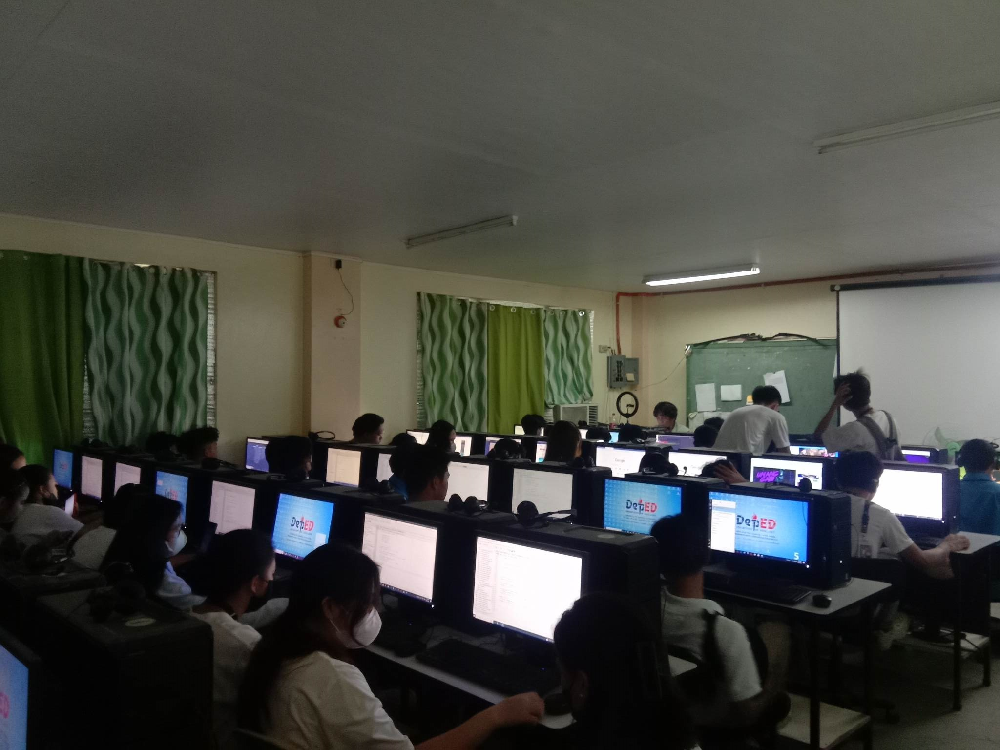

Cainta Senior Highschool
Cainta Senior Highschool
The ICT (Information and Communications Technology) strand provides students with comprehensive training in digital technology and computer systems. Students learn about software development, database management, network administration, and cybersecurity. Through hands-on projects and practical exercises, they acquire skills in programming languages, web development, and software applications. The program also covers topics such as computer hardware, digital media, and information management. Graduates are equipped for careers as software developers, IT specialists, systems analysts, or digital media designers in various industries.
• Computer Science
• Information Technology
• Information Systems
• Computer Engineering
• Information Science
• Multimedia and Graphic Design
• Data Science and Analytics
• Telecommunications Engineering
